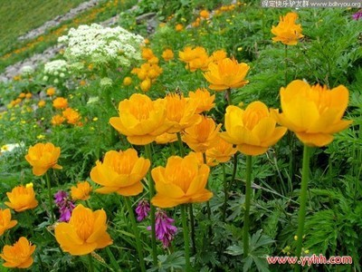

马奶酒 烤全羊 手抓肉

蓝莓（Blueberry），意为蓝色的浆果之意。一
量很高；蓝莓果实中含有丰富的营养成分，它不仅
具有良好的营养保健作用，还具有防止脑神经老化、
强心、抗癌软化血管、增强人机体免疫等功能。


红豆也称北国红豆，学名红豆越橘，鄂伦春人将其俗称为牙格达。
红豆生长于北纬52度以北、海拔900-1200米高度、生态环境保持良
好的大兴安岭森林中。
红豆果含有天然的鲜红色素和诱人果实香气，味道酸酸甜甜，并且
富含维生素C、E，是天然的女性美容养颜食品。


金莲花是稀有野生植物，喜冷凉湿润环境，多生长在海拔1800米以
上的高山草甸或疏林地带。其主产地在坝上周边地区的沿坝地带。
金莲花金黄璀璨，口感清爽，具有清热解毒，滋阴降火，养阴清热和
消火杀菌的作用，长期饮用可清咽润喉，提神醒脑，清食去腻，使人精
神振作，嗓音清亮。成其对慢性咽炎，喉炎，扁桃体炎和声音嘶哑者有消
炎，预防和治疗作用，对从事播音，声乐，教育和通讯等语音职业者有特殊的保
健治疗作用。
分布东北及内蒙古、河北、山西等地。